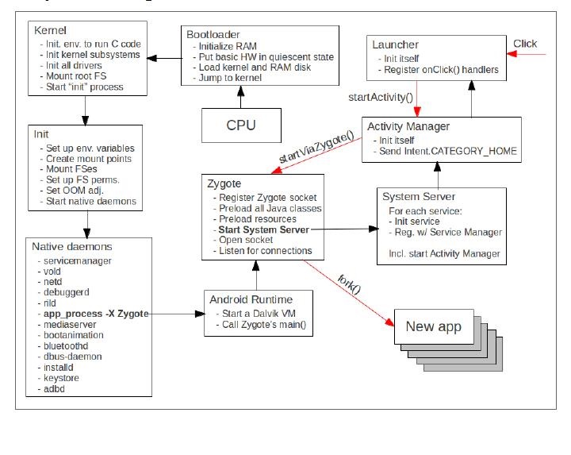

技术参考
作者：未子涵
链接：https://www.jianshu.com/p/2787a0661742
来源：简书
著作权归作者所有。商业转载请联系作者获得授权，非商业转载请注明出处。
Android的内存管理机制
Android使用 虚拟内存 和 分页，不支持交换
Android 运行时 (ART) 和 Dalvik 虚拟机使用 分页 和 内存映射 来管理内存。这意味着应用修改的任何内存，无论修改的方式是分配新对象还是轻触内存映射的页面，都会一直驻留在 RAM 中，并且无法换出。要从应用中释放内存，只能释放应用保留的对象引用，使内存可供垃圾回收器回收。这种情况有一个例外：对于任何未经修改的内存映射文件（如代码），如果系统想要在其他位置使用其内存，可将其从 RAM 中换出。
垃圾收集
无论是 RT还是Dalvik虚拟机，都和众多Java虚拟机一样，属于一种托管内存环境（程序员不需要显示的管理内存的分配与回收，交由系统自动管理）。托管内存环境会跟踪每个内存分配， 一旦确定程序不再使用一块内存，它就会将其释放回堆中，而无需程序员的任何干预。 回收托管内存环境中未使用内存的机制称为垃圾回收。
—垃圾收集有两个目标：
*在程序中查找将来无法访问的数据对象;
*回收这些对象使用的资源。
Android的垃圾收集器不带压缩整理功能（Compact），即不会对Heap做碎片整理
Android的内存堆是分代式（Generational的，意味着它会将所有分配的对象进行分代，然后分代跟踪这些对象。 例如，最近分配的对象属于年轻代（Young Generation）。 当一个对象长时间保持活动状态时，它可以被提升为年老代（Older Generation），之后还能进一步提升为永久代（Permanent Generation）。
每一代的对象可占用的内存总量都有其专用上限。 每当一代开始填满时，系统就会执行垃圾收集事件以试图释放内存。 垃圾收集的持续时间取决于它在收集哪一代的对象以及每一代中有多少活动对象。

虽然垃圾收集速度非常快，但它仍然会影响应用程序的性能。通常情况下你不需要控制代码中何时执行垃圾收集事件。 系统有一组用于确定何时执行垃圾收集的标准。 满足条件后，系统将停止执行当前进程并开始垃圾回收。 如果在像动画或音乐播放这样的密集处理循环中发生垃圾收集，则会增加处理时间。 这种增加可能会导致你的应用程序中的代码执行超过建议的16ms阈值。
为实现高效，流畅的帧渲染，Android建议绘制一帧的时间不要超过16ms。
此外，你的代码可能会执行各种工作，这些工作会导致垃圾收集事件更频繁地发生，或使其持续时间超过正常范围。 例如，如果在Alpha混合动画的每个帧期间在for循环的最内部分配多个对象，则大量的对象就会污染内存堆。 此时，垃圾收集器会执行多个垃圾收集事件，并可能降低应用程序的性能
Android进程模式
了解Android生命周期之前，需要理解Android进程模式。
由于 Android 平台资源有限，需为不同进程设置优先级，以便系统资源紧张时，通过 “杀死优先级较低进程” 释放资源。所以进程模式的存在主要是为了“标记和区分” 进程优先级。
进程优先级
App 进程级别，由其 “活跃的或处于栈顶的组件” 的状态（比如所处生命周期）决定。
按优先级从高到低，进程模式主要包含：
前景进程(onResume)、可见进程、服务进程、背景进程、空白进程 这 5 大类别。
!!!系统回收资源时，针对的是 App 的进程。
前景进程和可见进程2者主要的区别在于有没有获得焦点。
共享内存
Android可以跨进程共享RAM页面（Pages）
为了在 RAM 中容纳所需的一切，Android 会尝试跨进程共享 RAM 页面。它可以通过以下方式实现这一点：

每个应用进程都从一个名为 Zygote 的现有进程分叉。系统启动并加载通用框架代码和资源（如 Activity 主题背景）时，Zygote 进程随之启动。为启动新的应用进程，系统会分叉 Zygote 进程，然后在新进程中加载并运行应用代码。这种方法使为框架代码和资源分配的大多数 RAM 页面可在所有应用进程之间共享。
大多数静态数据会内存映射到一个进程中。这种方法使得数据不仅可以在进程之间共享，还可以在需要时换出。静态数据示例包括：Dalvik 代码（通过将其放入预先链接的 .odex 文件中进行直接内存映射）、应用资源（通过将资源表格设计为可内存映射的结构以及通过对齐 APK 的 zip 条目）和传统项目元素（如 .so 文件中的原生代码）。
在很多地方，Android 使用明确分配的共享内存区域（通过 ashmem 或 gralloc）在进程间共享同一动态 RAM。例如，窗口 surface 使用在应用和屏幕合成器之间共享的内存，而光标缓冲区则使用在内容提供器和客户端之间共享的内存。
限制应用的内存
为了维护高效的多任务环境，Android为每个应用程序设置了堆大小的硬性限制。 该限制因设备而异，取决于设备总体可用的RAM。 如果应用程序已达到该限制并尝试分配更多内存，则会收到 OutOfMemoryError 。
这里Google文档所说的堆指的是Java虚拟机堆，而我们游戏分配的内存比较多的是在native层面，需要区分清楚。
在某些情况下，你可能希望查询系统以准确确定当前设备上可用的堆空间大小，例如，确定可以安全地保留在缓存中的数据量。 你可以通过调用 getMemoryClass() 来查询系统中的这个数字。 此方法返回一个整数，指示应用程序堆可用的兆字节数。
切换应用
当用户在应用程序之间切换时，Android会将非前台应用程序（即用户不可见或并没有运行诸如音乐播放等前台服务的进程）缓存到一个最近最少使用缓存（LRU Cache）中。例如，当用户首次启动应用程序时，会为其创建一个进程; 但是当用户离开应用程序时，该进程不会退出。 系统会缓存该进程。 如果用户稍后返回应用程序，系统将重新使用该进程，从而使应用程序切换更快。
如果你的应用程序具有缓存进程并且它保留了当前不需要的内存，那么即使用户未使用它，你的应用程序也会影响系统的整体性能。 当系统内存不足时，就会从最近最少使用的进程开始，终止LRU Cache中的进程。另外，系统还会综合考虑保留了最多内存的进程，并可能终止它们以释放RAM。
当系统开始终止LRU Cache中的进程时，它主要是自下而上的。 系统还会考虑哪些进程占用更多内存，因为在它被杀时会为系统提供更多内存增益。 因此在整个LRU列表中消耗的内存越少，保留在列表中并且能够快速恢复的机会就越大。
Android 对 Linux系统 的内存管理机制进行的优化
Android对内存的使用方式同样是“尽最大限度的使用”，这一点继承了Linux的优点。只不过有所不同的是，Linux侧重于尽可能多的缓存磁盘数据以降低磁盘IO进而提高系统的数据访问性能，而Android侧重于尽可能多的缓存进程以提高应用启动和切换速度。Linux系统在进程活动停止后就结束该进程，而Android系统则会在内存中尽量长时间的保持应用进程，直到系统需要更多内存为止。这些保留在内存中的进程，通常情况下不会影响系统整体运行速度，反而会在用户再次激活这些进程时，加快进程的启动速度，因为不用重新加载界面资源了，这是Android标榜的特性之一。所以，Android现在不推荐显式的“退出”应用。
那为什么内存少的时候运行大型程序会慢呢，原因是：在内存剩余不多时打开大型程序会触发系统自身的进程调度策略，这是十分消耗系统资源的操作，特别是在一个程序频繁向系统申请内存的时候。这种情况下系统并不会关闭所有打开的进程，而是选择性关闭，频繁的调度自然会拖慢系统。